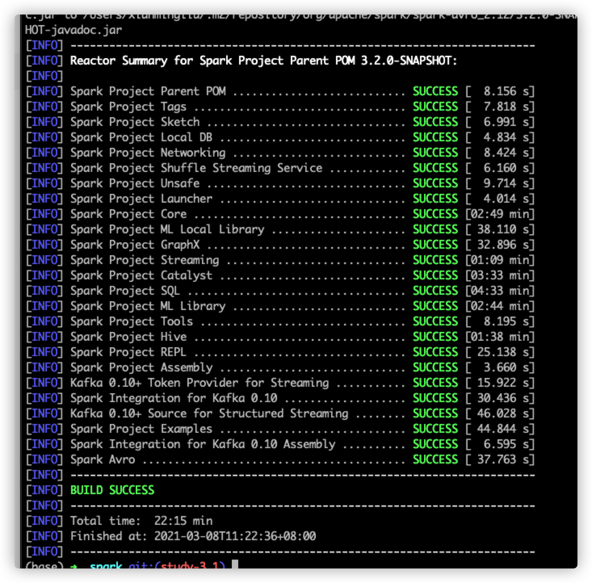
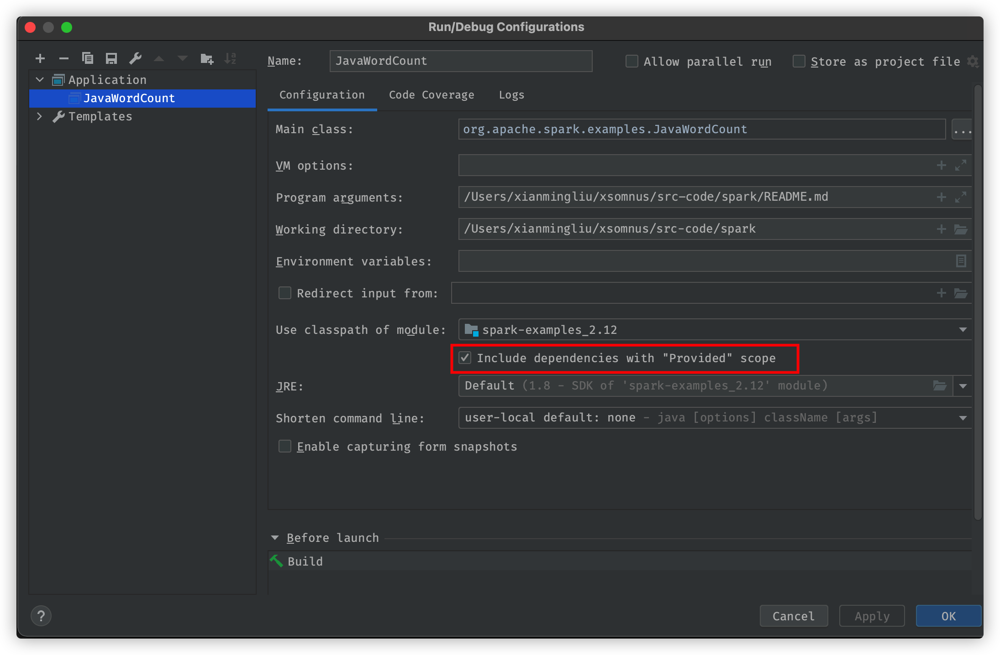

Apache Spark™ is a unified analytics engine for large-scale data processing.
编译环境
| 类型 |
值 |
说明 |
| OS |
macOS Big Sur(v11.0.1) |
|
| Java |
JDK8 |
|
| Scala |
2.12 |
|
| Spark |
3.1.1 |
|
假设:
本文读者已经了解spark的用途以及其生态中的几大组件(spark-core, sparksql, mllib graphx)等
编译过程
1. 把github上的spark仓库复制到gitee(码云)
如果已经有翻墙条件的同学是不必要的
2. clone代码到本地
建议添加一个study分支用来学习spark源码
3. mvn安装依赖
将mvn仓库换成阿里云镜像, 可以加快安装速度
mvn clean install -DskipTests

4. 模拟运行WordCount程序
程序所在路径
examples -> org.apache.spark.examples.JavaWordCount
添加程序启动参数 /Users/xianmingliu/xsomnus/src-code/spark/README.md
TIPS
提示找不到 SparkSession是由于项目导入包的作用域导致的。 按照下图操作即可

Spark包结构概述
1
2
3
4
5
6
7
8
9
10
11
12
13
14
15
16
17
18
19
20
21
22
23
24
25
26
27
28
29
30
31
32
33
34
35
36
37
38
39
40
41
42
43
44
45
46
47
48
49
50
51
52
53
54
55
56
57
58
59
60
61
62
63
64
65
66
67
68
69
70
71
72
73
74
75
76
77
78
79
80
81
82
83
84
85
86
87
88
89
90
| .
├── R
│ └── pkg -- 支持R语言的库
├── bin // 命令 spark-submit.sh spark-shell, spark-sql等
├── conf // 一些配置文件的模板
├── core // spark核心（RDD，阶段划分，任务调度等）
│ ├── benchmarks
│ ├── src
│ └── target
├── data // 用来放置一些测试数据的
│ ├── graphx
│ ├── mllib
│ └── streaming
├── dev
│ ├── create-release
│ ├── deps
│ ├── sparktestsupport
│ └── tests
├── docs
│ ├── _data
│ ├── _includes
│ ├── _layouts
│ ├── _plugins
│ ├── css
│ ├── img
│ └── js
├── examples // 存放一些使用示例的
│ ├── src
│ └── target
├── external
│ ├── avro
│ ├── docker
│ ├── docker-integration-tests
│ ├── kafka-0-10
│ ├── kafka-0-10-assembly
│ ├── kafka-0-10-sql
│ ├── kafka-0-10-token-provider
│ ├── kinesis-asl
│ ├── kinesis-asl-assembly
│ └── spark-ganglia-lgpl
├── graphx // 图计算相关的库
│ ├── src
│ └── target
├── hadoop-cloud
│ └── src
├── launcher
│ ├── src
│ └── target
├── licenses
├── licenses-binary
├── mllib // 机器学习库
│ ├── benchmarks
│ ├── src
│ └── target
├── mllib-local
│ ├── src
│ └── target
├── project
├── python
│ ├── docs
│ ├── lib
│ ├── pyspark
│ ├── test_coverage
│ └── test_support
├── repl
│ ├── src
│ └── target
├── resource-managers
│ ├── kubernetes
│ ├── mesos
│ └── yarn
├── sbin
├── sql // spark-sql核心组件
│ ├── catalyst
│ ├── core
│ ├── hive
│ └── hive-thriftserver
├── streaming
│ ├── src
│ └── target
├── target
│ ├── antrun
│ ├── maven-archiver
│ ├── maven-shared-archive-resources
│ └── tmp
└── tools
├── src
└── target
|
关于spark的一点思考
spark是大数据库领域必不可少的计算组件, 个人认为spark和flink会成为大数据计算领域的双子星;
spark的本质是分布式计算服务, 这就意味着spark需要分布式技术去保证实现. 其核心包含以下模块
其实最难的还是算法的设计, 作为服务于算法的分布式计算框架本身的spark并不难.希望通过【Spark源码】系列,能够帮助我以及各位朋友加深对spark的认知以及体会spark的优雅实现。